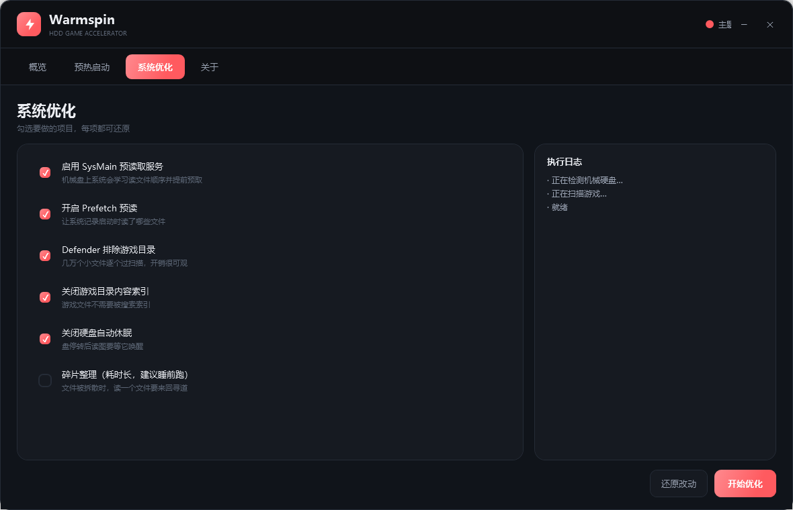
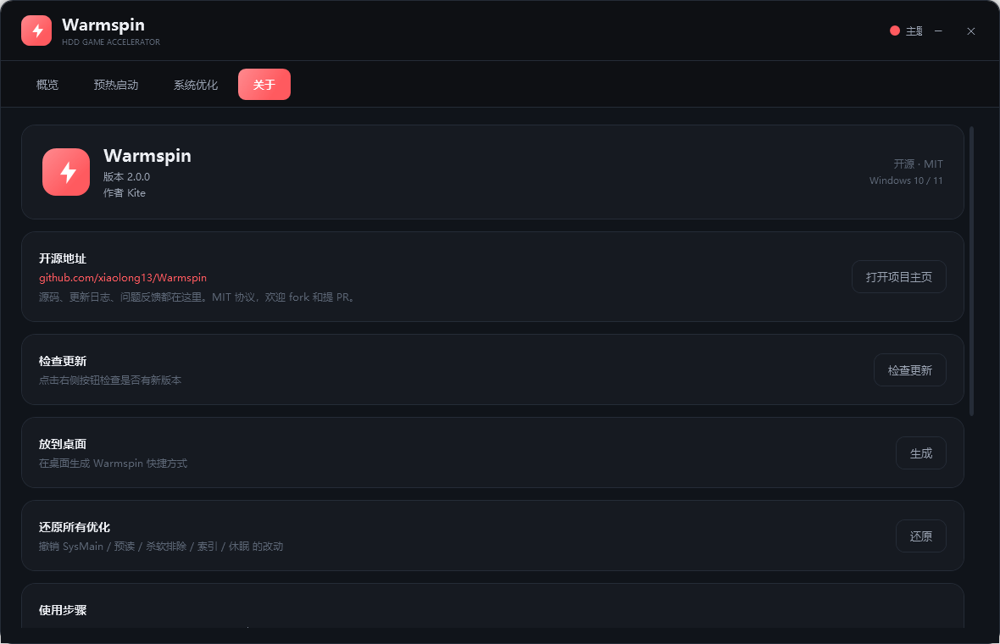
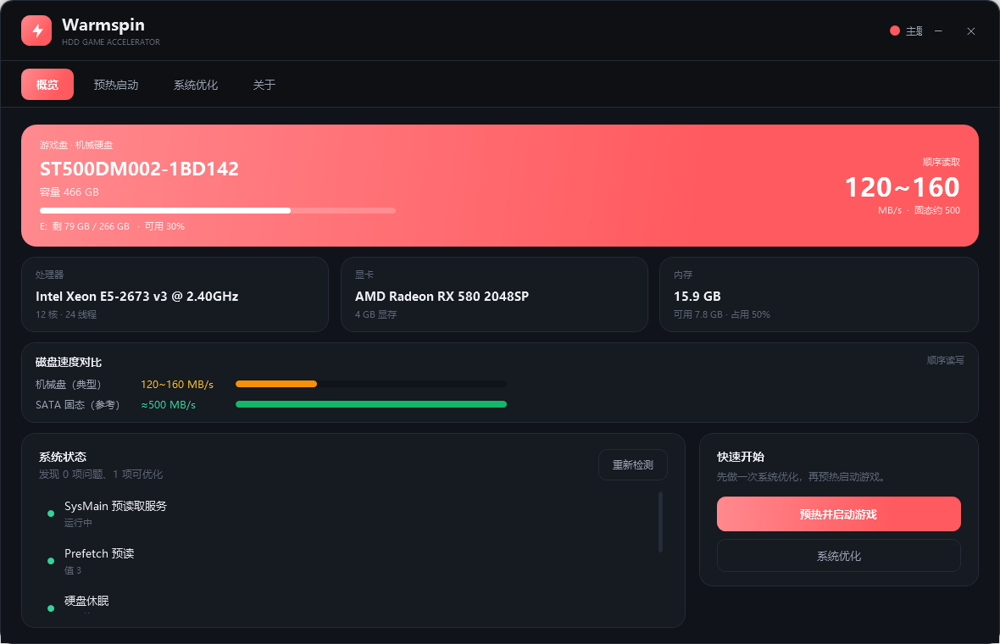

界面
四个页面：概览、预热启动、系统优化、关于。



启动前把这次要读的数据提前读进内存，顺手修掉被"优化软件"关掉的预读、被漏掉的杀软扫描和碎片。
开源、免费、单文件、不装驱动、不常驻后台。
21e781f6c853de4b324c45ed0503f6d9baf9693adc0925baca422bb9aada4876

三条线路，任选一条能打开的。文件是同一个，SHA-256 也一致。
三条线路文件完全一致，下载后可比对 SHA-256：
21e781f6c853de4b324c45ed0503f6d9baf9693adc0925baca422bb9aada4876
六件事，全部可逆，全部不需要装驱动。
把游戏最可能读的数据先读进 Windows 备用内存，游戏读图时走内存而不是磁头。预算 1~4 GB 可选，严格不超。
SysMain 预读、Prefetch、Defender 排除、关闭内容索引、关闭硬盘休眠、碎片整理。一键执行，一键还原。
扫 Steam 库、桌面与开始菜单快捷方式、注册表安装项。漏了的可以手动添加，之后一直记住。
用 WMI 读物理磁盘介质类型，多块盘时可以切换，游戏列表只显示选中那块盘上的游戏。
红黑（默认）、红白、靛蓝、青竹，一键切换并记住选择。原生 WPF 绘制，不套壳浏览器。
读清单比版本、下载后校验 SHA-256、就地替换并重启。没有新版本时明确告诉你"已是最新版本"。
四个页面：概览、预热启动、系统优化、关于。


要求很低，因为真正干活的是系统自己的预读和缓存。
| 项目 | 要求 |
|---|---|
| 操作系统 | Windows 10 / 11（已在 10 22H2 实测） |
| 运行时 | 系统自带的 .NET Framework 4.x，无需另装 |
| 权限 | 需要管理员（改服务、注册表、Defender 排除项） |
| 体积 | 单文件约 474 KB，配置存在 %LOCALAPPDATA% |
| 内存 | 预热占用 1~4 GB 备用内存，可随时释放 |
| 网络 | 除手动点"检查更新"外不联网 |
每次改动都记在这里。
先看这里，八成的问题都有答案。
不是。这是因为程序没有数字签名证书（一张代码签名证书每年要几百块），Windows 对任何未签名的新程序都会弹这个框，和文件本身是否安全无关。点"更多信息 → 仍要运行"即可。
如果不放心：页面上有 SHA-256 可以自己核对；也可以直接去 GitHub 看源码、自己编译一份。
不能，任何软件都不能。机械盘随机 4K 约 0.5~1 MB/s、寻道 12 ms；SATA SSD 随机 4K 约 40 MB/s、寻道 0.1 ms。游戏加载以小文件随机读为主，这段差距是物理限制。
Warmspin 做的是把"人祸"部分修好（预读被关、杀软逐个扫描、索引、碎片、冷缓存），再把本次要读的数据提前塞进内存。想真正接近固态，把游戏装到 SSD 上是唯一有效的办法。
同一张地图第二次进会明显更快，因为数据已经在系统缓存里。第一次进图仍然要从盘读，只是读的过程被提前到了启动之前——你等的是"启动前的那几十秒"，而不是"进图时的黑屏"。
所有改动都记录在本地，点"还原改动"逐项恢复。程序不装驱动、不加开机启动项、不常驻后台。
因为要改 Windows 服务（SysMain）、注册表（Prefetch）、Defender 排除项和磁盘电源设置。这些不给管理员权限做不了。
点右上角「+ 添加游戏」手动选安装目录，之后会一直记住。自动发现用的是启发式规则（Steam 库、快捷方式、注册表），不保证覆盖所有游戏。
MIT 协议，源码可读、可改、可自己编译。
powershell -ExecutionPolicy Bypass -File build.ps1